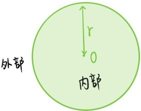
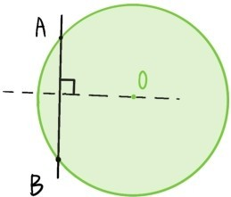
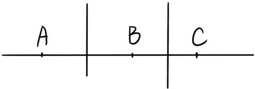
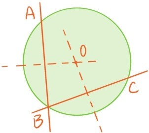
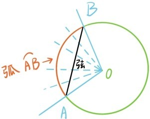
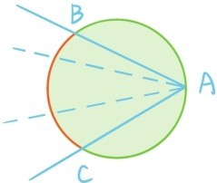
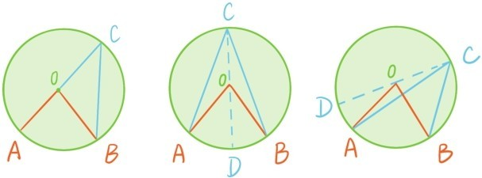

一个圆完全由它的圆心O，和半径r确定，是由到O的距离为r的所有点构成的。一个圆将平面上其他的点分成两个部分：圆的内部和外部，到圆心O的距离小于r的所有点构成圆的内部，到圆心O的距离大于r的所有点构成圆的外部。

连结圆周上两点的线段称为圆的弦。根据定理3.5，圆心O总是落在圆的任何一条弦的垂直平分线上。

定理5.1 圆与直线最多只有两个交点。
证明：（反证法）假设直线上有三个点A，B，C都落在圆上，则线段AB与线段BC的垂直平分线都过圆心。但是根据定理3.1，这两条垂线是平行的，这就导致矛盾（证毕）。

定理5.2 过不在同一条直线上的三个点，有且仅有一个圆。
证明：给定不在同一条直线上的三个点A，B，C。分别作AB与BC的垂直平分线m与n。若m与n平行，根据定理3.6，AB与n也垂直。因此过点B就有两条直线垂直n，这与定理3.2矛盾，所以m与n一定会相交于一点O。根据定理3.5，OA=OB=OC，所以以O为圆心，以OA为半径的圆过A，B，C三点。

另外，若有个圆过A，B，C三点，则圆心一定落在垂直平分线m与n上，因此一定与O重合，这个圆的半径也等于OA（证毕）。
接下来讨论圆与直线的位置关系。根据定理5.1，圆与直线最多只有两个交点。过圆心O作直线的垂线，垂足为P。现在将圆与直线的位置关系分成3种情况：
第一，圆心到直线的距离OP大于半径。这时，圆心到直线上所有点的距离都大于半径，所以直线上的所有点都落在圆的外部，称直线与圆相离；
第二，圆心到直线的距离OP等于半径。这时，圆心到直线上其他点的距离都大于半径，所以直线与圆只有一个交点P，称直线与圆相切；
第三，圆心到直线的距离OP小于半径。这时，点P落在圆内部，这时直线与圆有两个交点，称直线与圆相割。
以圆心O为顶点的角称为圆心角。若圆心角的两边与圆分别交于点A，B，则这两个点将圆分成两个部分，其中落在圆心角内部的部分称为圆心角（即∠AOB）所对应的弧，记作。线段AB称为圆心角所对应的弦。

以圆上的点为顶点，以圆上的弦为边的角称为圆周角，圆周角与圆相交的那一部分称为与圆周角相对应的弧。下图橙色部分就是圆周角∠BAC所对应的弧。

定理5.3 同一段弧所对应的圆心角是圆周角的2倍。

证明：如上图所示，分成3种情况：1，圆心在圆周角边上；2，圆心在圆周角内；3，圆心在圆周角外。我们只证明第三种情况，其他两种情况可以类似证明。根据定理2.2和定理2.7，∠AOD=∠OAC+∠OCA=2∠OCA，同理∠BOD=2∠OCB。所以∠AOB=∠BOD-∠AOD=2∠OCB-2∠OCA=2∠ACB（证毕）。
由定理5.3可以推出下面3个定理，具体的细节留给读者作为习题。
定理5.4 同一段弧所对的两个圆周角相等。
定理5.5 若一个四边形的顶点都落在同一个圆上，则四边形对角之和等于180°。
定理5.6 半圆或者直径所对的圆周角等于90°。